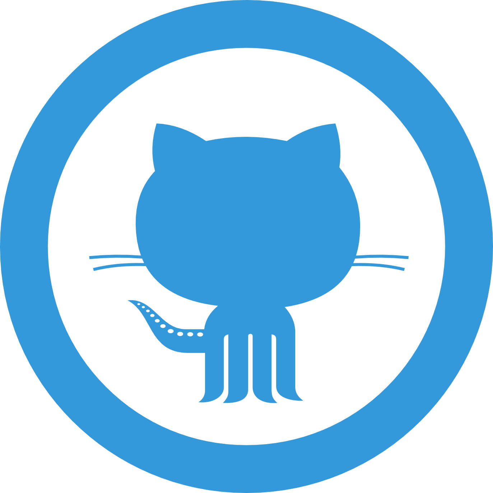

A self project done by myself
Source CodeThis project is a web-based application demonstrating basic CRUD (Create, Read, Update, Delete) operations using modern web development technologies. It serves as a foundational example for developers learning how to implement data manipulation functionality in a structured and user-friendly way. The application allows users to:
This CRUD Operations project demonstrates a well-structured Spring Boot-based web application with essential features like employee management using RESTful APIs, cloud database, and containerized deployment. It highlights the end-to-end workflow from backend development to cloud deployment, making it a great learning and showcase project for beginner-to-intermediate level developers.